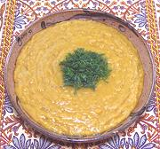

|
Syrian Red Lentil SoupSyria - Shorbet Addas | ||||
| Serves: Effort: Sched: DoAhead: |
6 cups ** 1 hr Yes |
An elegant soup course, but not complex enough to stand alone. You might want to make the soup more liquid than shown in the photo. It's vegetarian, unless you modify it. See Comments for serving suggestions. | |||
|
|
1-3/4 6 4 1/2 1/2 1 5 1/2 1/4 3 ------- see |
c oz cl t t t c T t T --- |
Red Lentils (1) Onions Garlic Cumin seed Turmeric Olive Oil Stock, Syrian (2) Salt Pepper Lemon Juice -- Serve with Comments |
The stock can be made even a few days ahead and refrigerated, making final production easy. Do-Ahead - (1-1/4 hr - 15 min work)
|